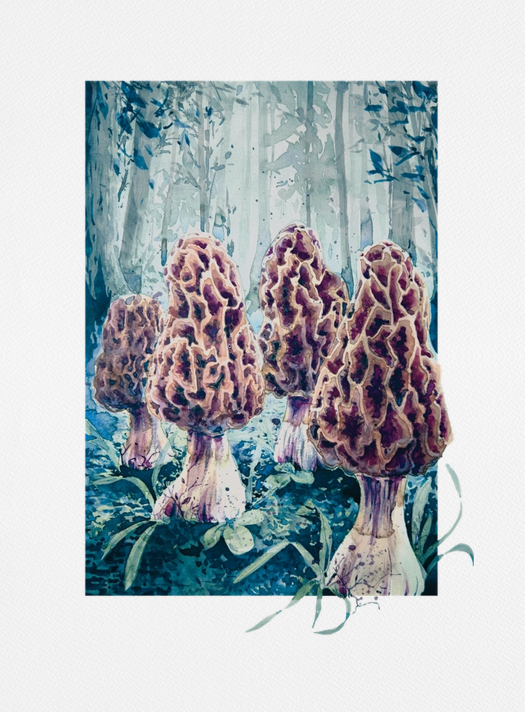
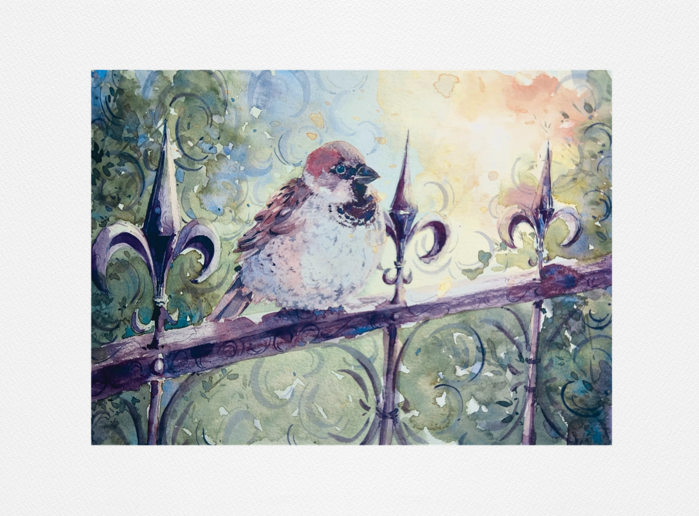
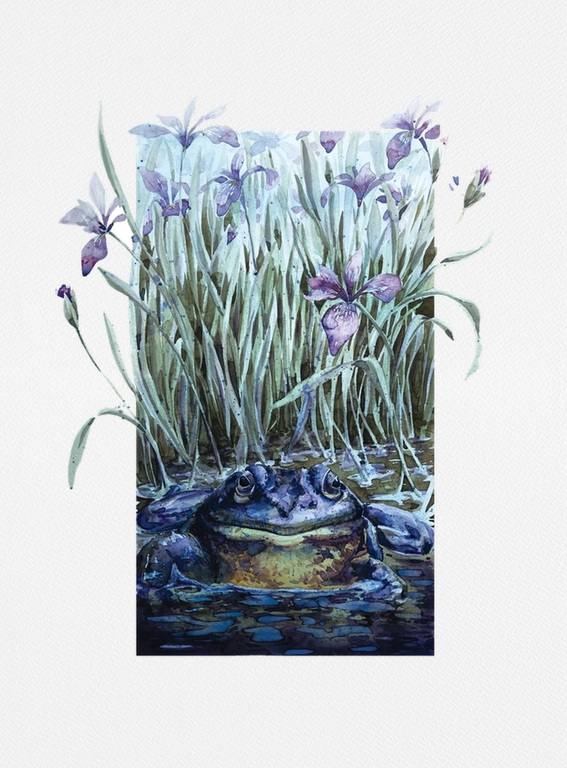
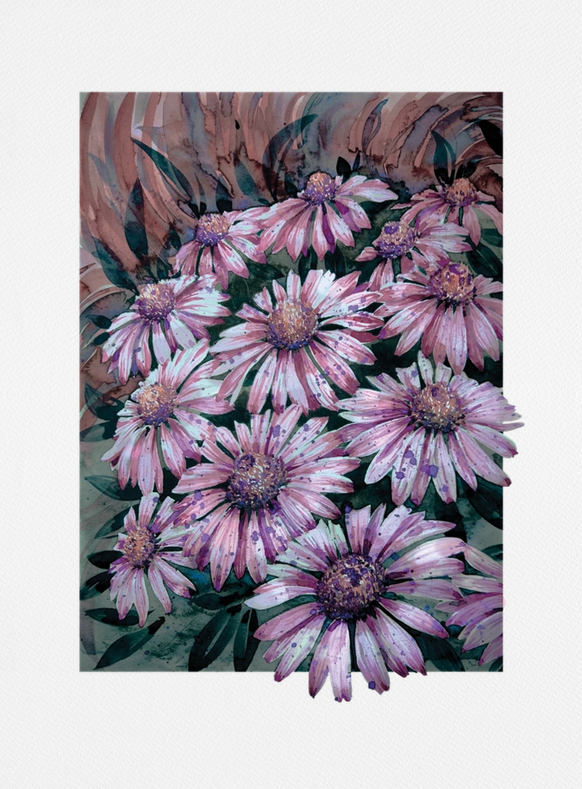
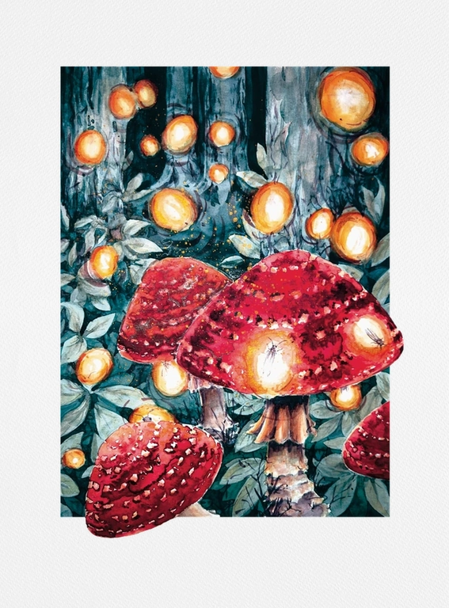
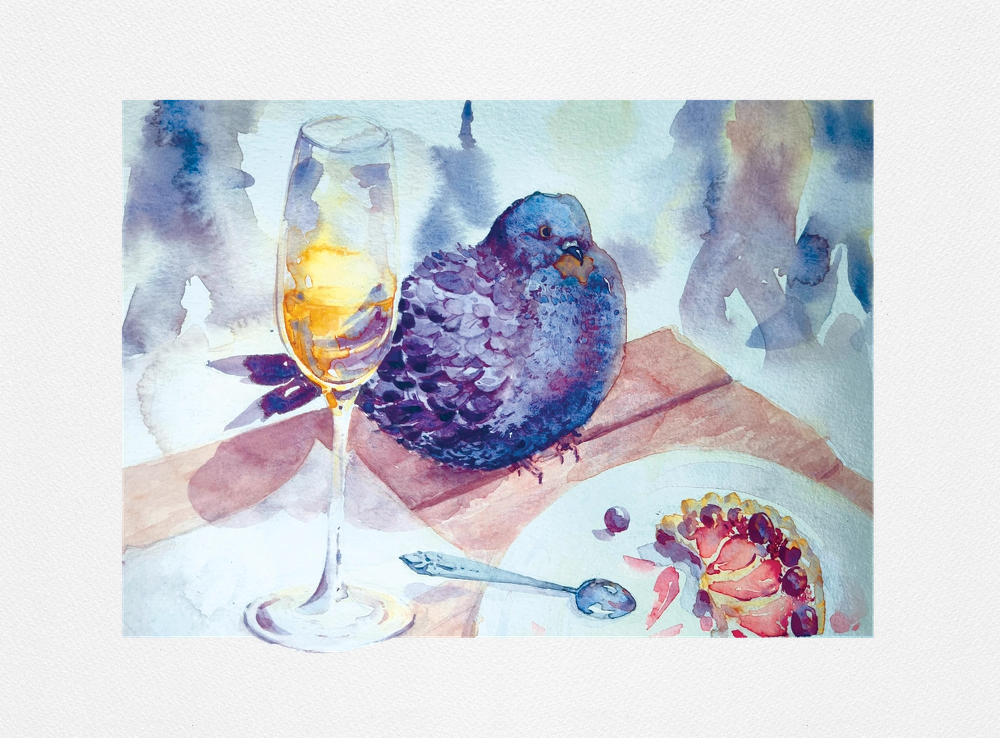
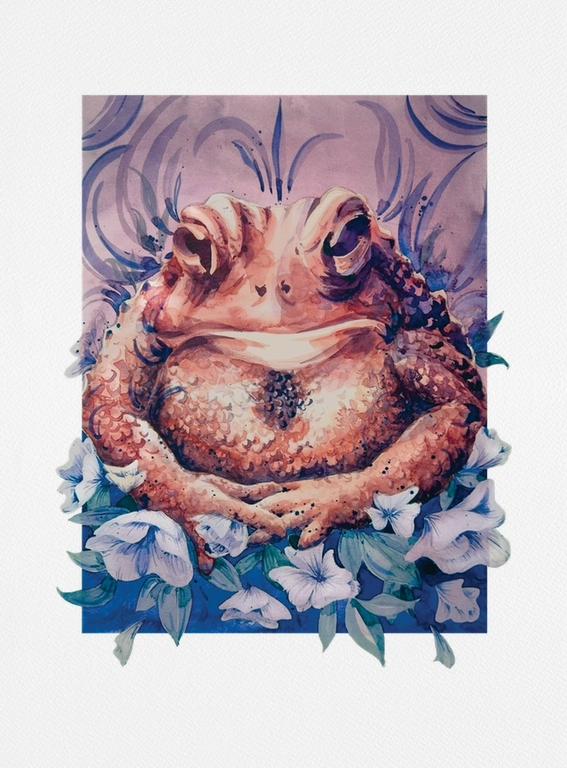
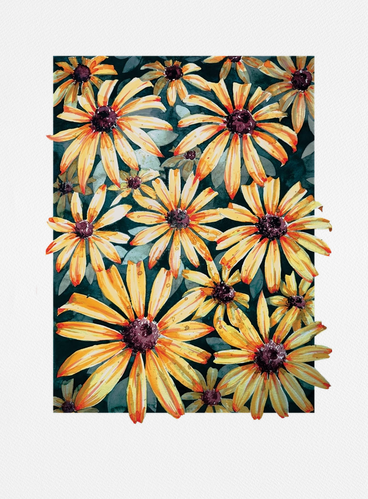
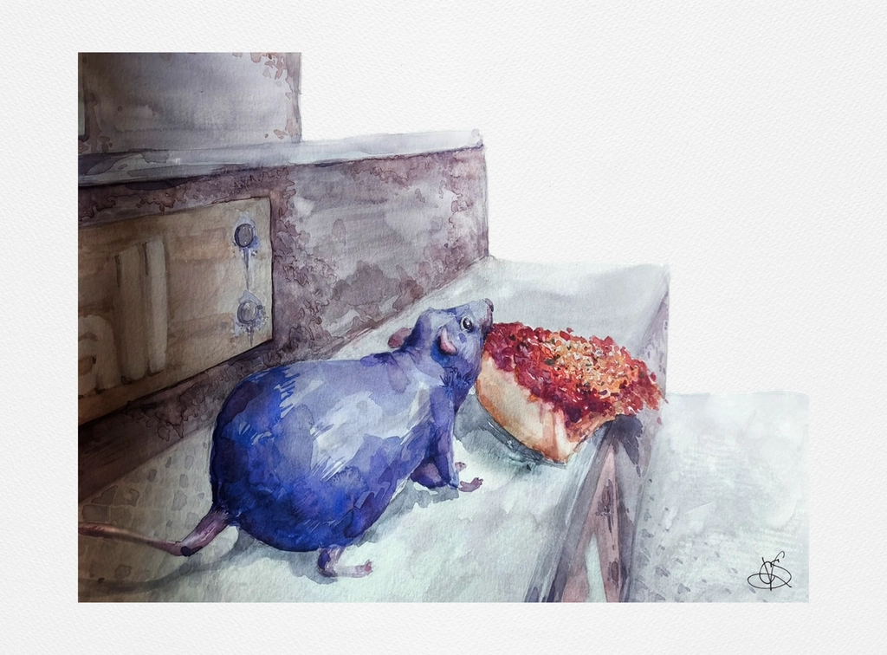
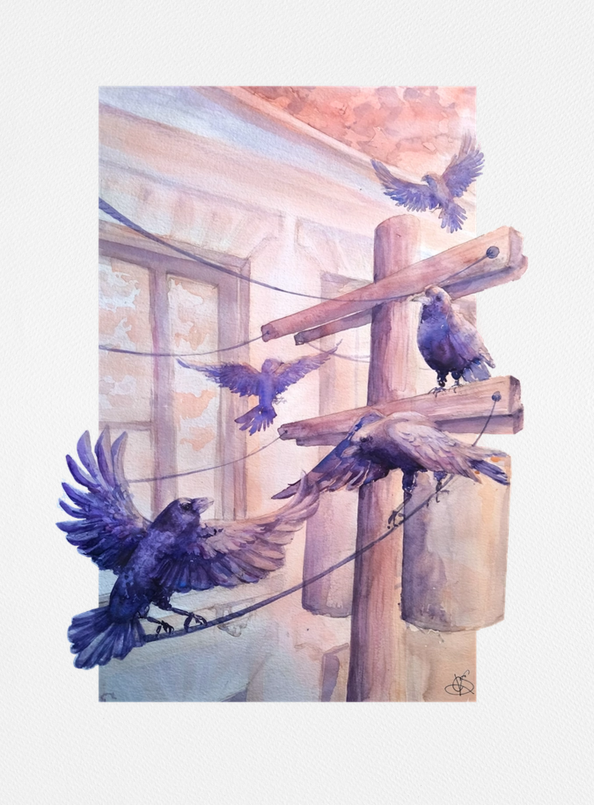

Morchella
Certain morel species emerge in abundance after wildfires, exploiting nutrient-rich, disturbed soils in a transient ecological window.

Passer Domesticus
House sparrows are so strongly associated with human activity that the species is known to go locally extinct in abandoned settlements

Lithobates Catesbeianus
The American bullfrog is highly invase and alters ecosystems through appetite, resilience, and its role as a silent carrier of disease.

Corvus
Crows distinguish between events with visible causes and those without, suggesting an ability to reason about hidden mechanisms, comparable to reasoning in primates.

Echinacea
Purple Coneflowers are one of the most important and well-known medicinal plants in the world, they have been used historically in the treatment of toothaches, bowel pain, snake bites, skin disorders, seizures, chronic arthritis, and cancer.

Amanita Muscaria
A mycorrhiza is a symyotic relationship between a fungus and plant, more than 90% of vascular plants and over 80% of all extant terrestrial plants retain this association.

Columba Livia
Pigeons learn and repeatedly follow individual routes, navigating paths shaped by the landscape itself.

Placeholder
American toads survive freezing climates by retreating underground, avoiding extreme temperature shifts making their survival possible in near-arctic regions.

Rudbeckia Hirta
Black-eyed Susans encode information for pollinators in wavelengths invisible to human perception but visible as a high-contrast signal for UV-sensitive insects.

Rattus
Rats differentiate between bad outcomes and bad decisions. They experience regret, not just about what was lost, but about realizing it was avoidable.

Larus
Urban gulls exploit cities as a predictable food map, shortening their search effort by returning to reliable human-made sources of food.

Sciuridae
Squirrels act as agents of seed dispersal, their feeding strategy helps structure forest ecosystems.

Corvus
Corvid cognition rivals primates in some domains. Crows exhibit advanced cognition despite a fundamentally different brain structure.

Canis Lupus
Dogs are highly attuned to human communicative cues, they interpret human gestures and gaze with an uncommon level of sensitivity.

Columba Livia
Pigeons learned to distinguish real words from non-words; showing statistical pattern recognition in symbols, approximating mechanisms used in reading.